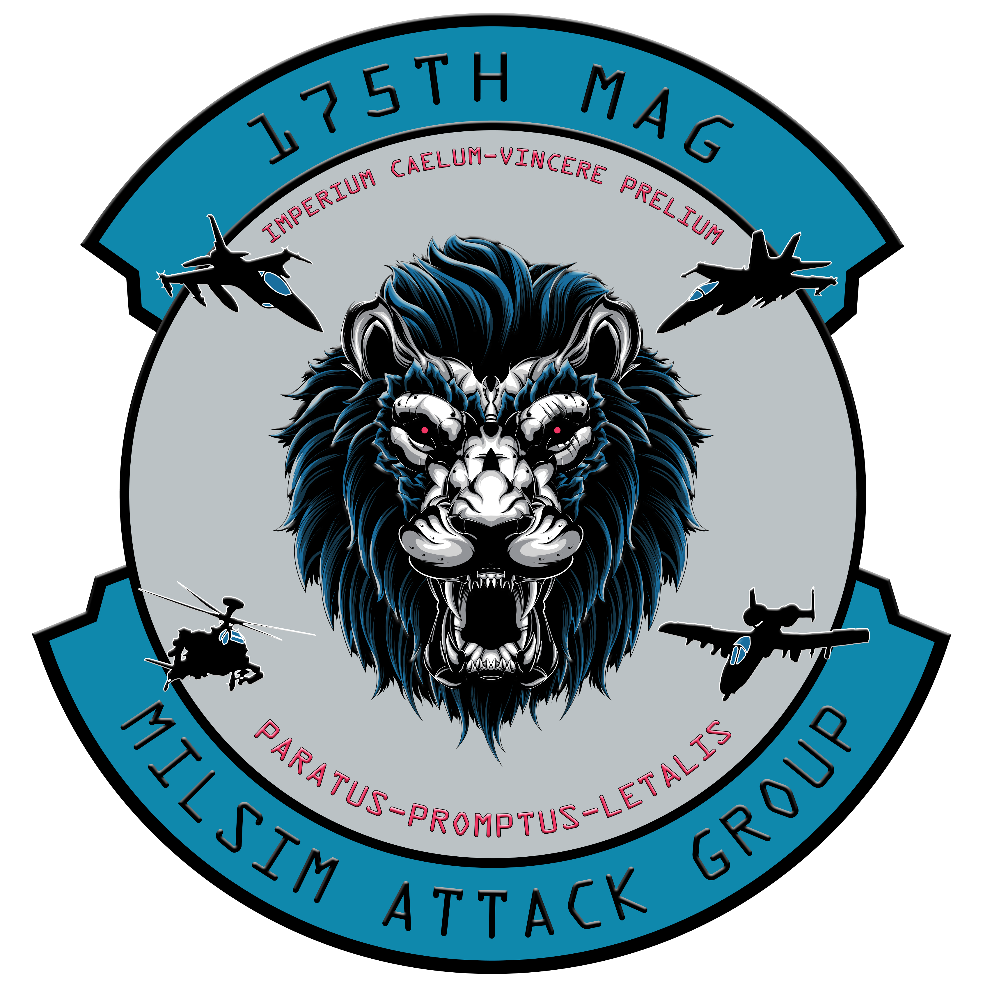

|  |
The following are the minimum requirements to be considered for an empty recruit slot with the 175th MAG. Please read and meet all requirements prior to expressing your interest in joining the Squadron. Your participation does not guarantee you a spot with the 175th MAG, your selection is based on participation, communication, engagement and willingness to be part of a team! Your Squadron Commander will guide you through the process from Recruit to becoming a Member. Be sure to communicate with them and ask them questions in regards to your status. There is NO Time Frame on which you will be promoted to a Member of the 175th MAG, that time frame depends on you and your leadership.
|
Requirements:1) Minimum three months of flying within DCS. 2) Minimum three months of flying in the airframe of your choosing. 3) Must have a basic understanding of all weapon and flight systems including the HMCS. 4) Must be able to start the aircraft from cold/dark. 5) Must be able to take off and land the aircraft fluently. 6) Must have the module for your chosen airframe. 7) Must be running the BETA version of DCS World.
8) Must have SRS installed and set up. |
|